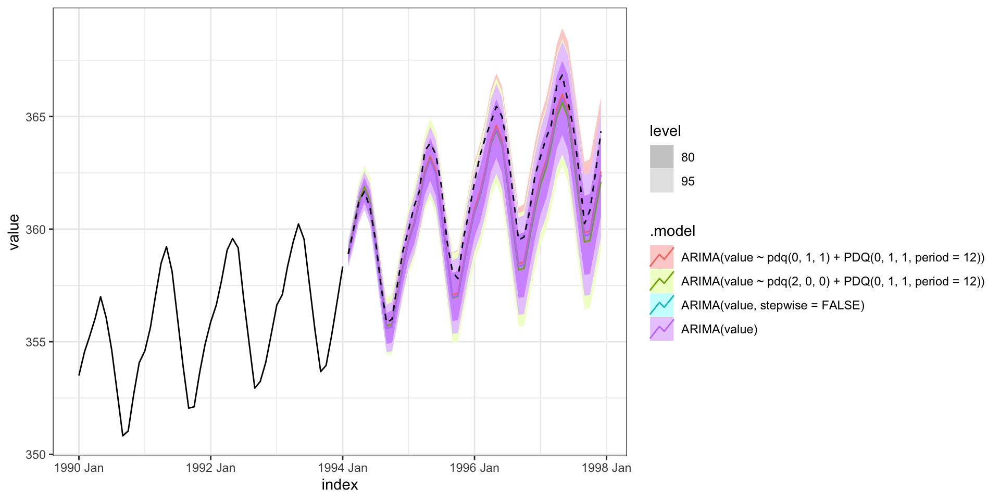
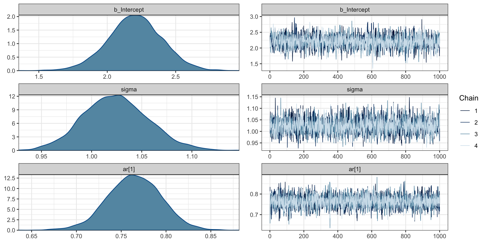
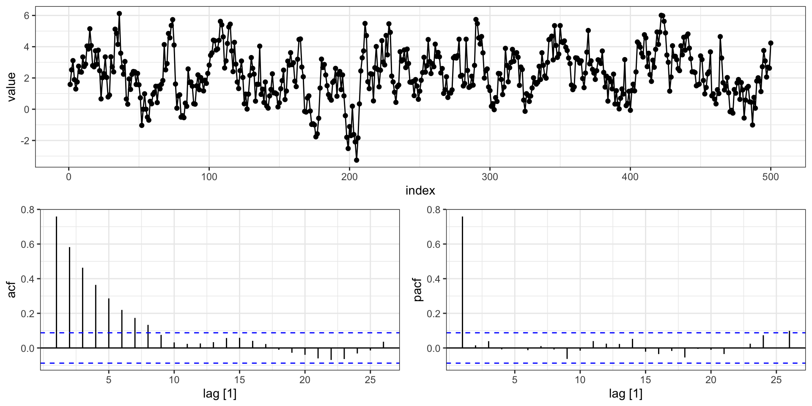
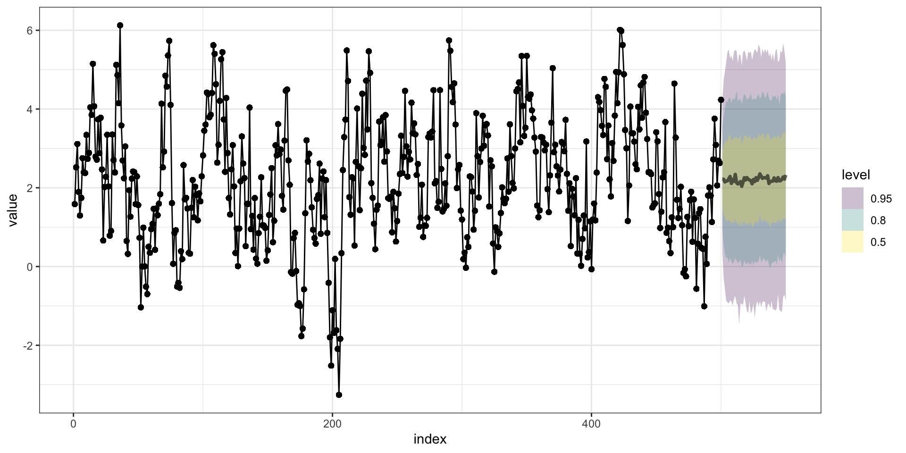
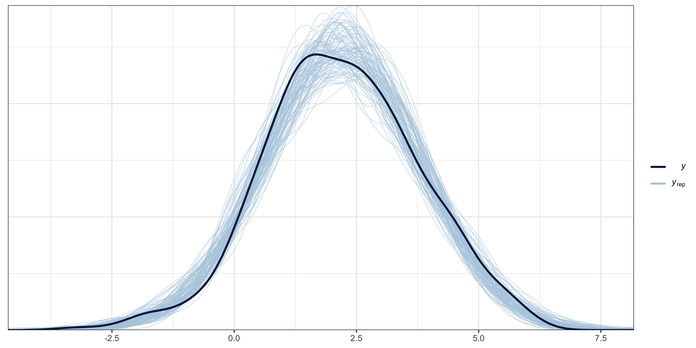

Series: ar1
ARIMA(1,0,0) with non-zero mean
Coefficients:
ar1 mean
0.7601 2.2178
s.e. 0.0290 0.1890
sigma^2 = 1.045: log likelihood = -719.84
AIC=1445.67 AICc=1445.72 BIC=1458.32Fitting ARIMA Models
Lecture 12
Dr. Colin Rundel
Model Fitting
Fitting ARIMA
For an \(ARIMA(p,d,q)\) model,
Assumes that the data is stationary after differencing
Handling \(d\) is straight forward, just difference the original data \(d\) times (leaving \(n-d\) observations) \[ y'_t = \Delta^d \, y_t \]
After differencing, fit an \(ARMA(p,q)\) model to \(y'_t\).
To keep things simple we’ll assume \(w_t \overset{iid}{\sim} \mathcal{N}(0,\sigma^2_w)\)
MLE - Stationarity & iid normal errors
If both of these assumptions are met, then the time series \(y_t\) will also be normal.
In general, the vector \(\boldsymbol{y} = (y_1, y_2, \ldots, y_t)'\) will have a multivariate normal distribution with mean \(\{\boldsymbol\mu\}_i = E(y_i) = E(y_t)\) and covariance \(\boldsymbol\Sigma\) where \(\{\boldsymbol{\Sigma}\}_{ij} = \gamma(i-j)\).
The joint density of \(\boldsymbol y\) is given by
\[ f_{\boldsymbol y}(\boldsymbol y) = \frac{1}{(2\pi)^{t/2}\,\det(\boldsymbol\Sigma)^{1/2}} \times \exp\left( -\frac{1}{2}(\boldsymbol y - \boldsymbol \mu)' \, \Sigma^{-1} \, (\boldsymbol y - \boldsymbol \mu) \right) \]
AR
Fitting \(AR(1)\)
\[ y_t = \delta + \phi \, y_{t-1} + w_t \]
We need to estimate three parameters: \(\delta\), \(\phi\), and \(\sigma_w^2\), we know
\[ \begin{aligned} E(y_t) = \frac{\delta}{1-\phi} \quad&\quad Var(y_t) = \frac{\sigma_w^2}{1-\phi^2} \\ \gamma(h) &= \frac{\sigma_w^2}{1-\phi^2} \phi^{|h|} \end{aligned} \]
Using these properties it is possible to write the distribution of \(\boldsymbol{y}\) as a MVN but that does not make it easy to write down a (simplified) closed form for the MLE estimate for \(\delta\), \(\phi\), and \(\sigma_w^2\).
Conditional Density
We can also rewrite the density as follows,
\[ \begin{aligned} f(\boldsymbol y) &= f(y_t,\,y_{t-1},\,\ldots,\,y_2,\,y_1) \\ &= f(y_t|\,y_{t-1},\,\ldots,\,y_2,\,y_1) f(y_{t-1}|y_{t-2},\,\ldots,\,y_2,\,y_1) \cdots f(y_2|y_1) f(y_1) \\ &= f(y_t|\,y_{t-1}) f(y_{t-1}|y_{t-2}) \cdots f(y_2|y_1) f(y_1) \end{aligned} \]
where,
\[ \begin{aligned} y_1 &\sim \mathcal{N}\left(\delta, \, \frac{\sigma^2_w}{1-\phi^2} \right) \\ y_{t}|y_{t-1} &\sim \mathcal{N}\left(\delta+\phi\, y_{t-1}, \, \sigma^2_w \right) \\ f(y_{t}|y_{t-1}) &= \frac{1}{\sqrt{2\pi \, \sigma^2_w}} \exp \left( -\frac{1}{2}\frac{(y_t -\delta+\phi\, y_{t-1})^2 }{\sigma^2_w} \right) \end{aligned} \]
Log likelihood of AR(1)
\[ \log f(y_{t} | y_{t-1}) = -\frac{1}{2}\left( \log 2\pi + \log \sigma^2_w + \frac{1}{\sigma_w^2} (y_t -\delta+\phi\, y_{t-1})^2 \right) \]
\[ \begin{aligned} \ell(\delta, \phi, \sigma^2_w) &= \log f(\boldsymbol{y}) = \log f(y_1) + \sum_{i=2}^t \log f(y_{i}|y_{i-1}) \\ &= - \frac{1}{2} \bigg(\log 2\pi + \log \sigma_w^2 - \log (1-\phi^2) + \frac{(1-\phi^2)}{\sigma_w^2 }(y_1-\delta)^2 \bigg) \\ & ~~~~ - \frac{1}{2} \bigg( (n-1) \log 2\pi + (n-1) \log \sigma_w^2 + \frac{1}{\sigma_w^2} \sum_{i=2}^n (y_i -\delta+\phi\, y_{i-1})^2 \bigg) \\ &= - \frac{1}{2} \bigg( n \log 2\pi + n \log \sigma_w^2 - \log (1-\phi^2) \\ &~~~~~~~~~~~~~~~+ \frac{1}{\sigma_w^2} \bigg( (1-\phi^2)(y_1-\delta)^2 + \sum_{i=2}^n (y_i -\delta+\phi\, y_{i-1})^2 \bigg) \bigg) \end{aligned} \]
AR(1) Example
with \(\phi = 0.75\), \(\delta=0.5\), and \(\sigma_w^2=1\),

ARIMA
mean vs \(\delta\)?
The reported mean value from the ARIMA model is \(E(y_t)\) and not \(\delta\) - for an ARIMA(1,0,0) \[ E(y_t) = \frac{\delta}{1-\phi} ~~\Rightarrow~~ \delta = E(y_t) * (1-\phi) \]
lm
d = tsibble::as_tsibble(ar1) %>%
as_tibble() %>%
rename(y = value)
summary({ ar1_lm = lm(y~lag(y), data=d) })
Call:
lm(formula = y ~ lag(y), data = d)
Residuals:
Min 1Q Median 3Q Max
-2.7194 -0.6991 -0.0139 0.6323 3.3518
Coefficients:
Estimate Std. Error t value Pr(>|t|)
(Intercept) 0.53138 0.07898 6.728 4.74e-11 ***
lag(y) 0.76141 0.02918 26.090 < 2e-16 ***
---
Signif. codes: 0 '***' 0.001 '**' 0.01 '*' 0.05 '.' 0.1 ' ' 1
Residual standard error: 1.023 on 497 degrees of freedom
(1 observation deleted due to missingness)
Multiple R-squared: 0.578, Adjusted R-squared: 0.5771
F-statistic: 680.7 on 1 and 497 DF, p-value: < 2.2e-16Bayesian AR(1) Model
library(brms) # must be loaded for arma to work
( ar1_brms = brm(y ~ arma(p = 1, q = 0), data=d, refresh=0) ) Family: gaussian
Links: mu = identity; sigma = identity
Formula: y ~ arma(p = 1, q = 0)
Data: d (Number of observations: 500)
Draws: 4 chains, each with iter = 2000; warmup = 1000; thin = 1;
total post-warmup draws = 4000
Correlation Structures:
Estimate Est.Error l-95% CI u-95% CI Rhat Bulk_ESS Tail_ESS
ar[1] 0.76 0.03 0.71 0.82 1.00 3820 2893
Population-Level Effects:
Estimate Est.Error l-95% CI u-95% CI Rhat Bulk_ESS Tail_ESS
Intercept 2.20 0.19 1.82 2.58 1.00 3728 2811
Family Specific Parameters:
Estimate Est.Error l-95% CI u-95% CI Rhat Bulk_ESS Tail_ESS
sigma 1.02 0.03 0.96 1.09 1.00 3889 2940
Draws were sampled using sampling(NUTS). For each parameter, Bulk_ESS
and Tail_ESS are effective sample size measures, and Rhat is the potential
scale reduction factor on split chains (at convergence, Rhat = 1).Chains
PP Checks
Posteriors

Predictions
Forecasting

:::
Fitting AR(p)
Lagged Regression
As with the AR(1), we can rewrite the density using conditioning, \[ \begin{aligned} f(\boldsymbol y) &= f(y_t, \,y_{t-1}, \,\ldots, \,y_{2}, \,y_{1}) \\ &= f(y_{n}|y_{n-1},\ldots,y_{n-p}) \cdots f(y_{p+1}|y_p,\ldots,y_1) f(y_p, \,\ldots, y_1) \end{aligned} \]
Regressing \(y_t\) on \(y_{t-1}, \ldots, y_{t-p}\) gets us an approximate solution, but it ignores the \(f(y_1, \, y_2, \,\ldots, y_p)\) part of the likelihood.
How much does this matter (vs. using the full likelihood)?
If \(p\) is near to \(n\) then probably a lot
If \(p << n\) then probably not much
Method of Moments
Recall for an AR(p) process,
\[ \begin{aligned} \gamma(0) &= \sigma^2_w + \phi_1 \gamma(1) + \phi_2 \gamma(2) + \ldots + \phi_p \gamma(p) \\ \gamma(h) &= \phi_1 \gamma(h-1) + \phi_2 \gamma(h-2) + \ldots \phi_p \gamma(h-p) \end{aligned} \] We can rewrite the first equation in terms of \(\sigma^2_w\), \[ \sigma^2_w = \gamma(0) - \phi_1 \gamma(1) - \phi_2 \gamma(2) - \ldots - \phi_p \gamma(p) \] these are called the Yule-Walker equations.
Yule-Walker
These equations can be rewritten into matrix notation as follows
\[ \underset{p \times p}{\boldsymbol\Gamma_p} \underset{p \times 1}{\boldsymbol\phi} = \underset{p \times 1}{\boldsymbol\gamma_p} \qquad\qquad \underset{1 \times 1}{\sigma^2_w} = \underset{1 \times 1}{\gamma(0)} - \underset{1 \times p}{\boldsymbol{\phi'}}\underset{p \times 1}{\boldsymbol{\gamma_p}} \] where
\[ \begin{aligned} \underset{p \times p}{\boldsymbol{\Gamma_p}} &= \{\gamma(j-k)\}_{j,k} \\ \underset{p \times 1}{\boldsymbol\phi} &= (\phi_1, \phi_2, \ldots, \phi_p)' \\ \underset{p \times 1}{\boldsymbol\gamma_p} &= (\gamma(1), \gamma(2), \ldots, \gamma(p))' \end{aligned} \]
If we estimate the covariance structure from the data we obtain \(\hat{\boldsymbol\gamma_p}\) and \(\hat{\boldsymbol\Gamma_p}\) which we can plug in and solve for \(\boldsymbol{\phi}\) and \(\sigma^2_w\), \[ \hat{\boldsymbol\phi} =\hat{\boldsymbol{\Gamma}_p}^{-1}\hat{\boldsymbol{\gamma}_p} \qquad\qquad \hat{\sigma}^2_w = \gamma(0) - \hat{\boldsymbol{\gamma}_p}' \hat{\boldsymbol{\Gamma}_p^{-1}} \hat{\boldsymbol{\gamma}_p} \]
ARMA
Fitting \(ARMA(2,2)\)
\[ y_t = \delta + \phi_1 \, y_{t-1} + \phi_2 \, y_{t-2} + \theta_1 w_{t-1} + \theta_2 w_{t-2} + w_t \]
We now need to estimate six parameters: \(\delta\), \(\phi_1\), \(\phi_2\), \(\theta_1\), \(\theta_2\) and \(\sigma_w^2\).
\(~\)
We could figure out \(E(y_t)\), \(Var(y_t)\), and \(Cov(y_t, y_{t+h})\), but the last two are going to be pretty nasty and the full MVN likehood is similarly going to be unpleasant to work with.
\(~\)
Like the AR(1) and AR(p) processes we want to use conditioning to simplify things. \[ \begin{aligned} y_t | \delta, &y_{t-1}, y_{t-2}, w_{t-1}, w_{t-2} \\ &\sim \mathcal{N}(\delta + \phi_1 \, y_{t-1} + \phi_2 \, y_{t-2} + \theta_1 w_{t-1} + \theta_2 w_{t-2},~\sigma_w^2) \end{aligned} \]
ARMA(2,2) Example
with \(\phi = (0.75,-0.5)\), \(\theta = (0.5,0.2)\), \(\delta=0\), and \(\sigma_w^2=1\) using the same models
ARIMA
Series: y
ARIMA(2,0,2) with zero mean
Coefficients:
ar1 ar2 ma1 ma2
0.7290 -0.4967 0.4896 0.2543
s.e. 0.0868 0.0586 0.0940 0.0727
sigma^2 = 1.082: log likelihood = -728.13
AIC=1466.26 AICc=1466.38 BIC=1487.33
Training set error measures:
ME RMSE MAE MPE MAPE MASE
Training set 0.02160055 1.036121 0.8309352 -7.423015 270.5659 0.6674512
ACF1
Training set -0.001909506AR only lm
Call:
lm(formula = y ~ lag(y, 1) + lag(y, 2))
Residuals:
Min 1Q Median 3Q Max
-2.95562 -0.69955 0.00587 0.77063 3.13283
Coefficients:
Estimate Std. Error t value Pr(>|t|)
(Intercept) 0.02892 0.04802 0.602 0.547
lag(y, 1) 1.07883 0.03430 31.455 <2e-16 ***
lag(y, 2) -0.64708 0.03438 -18.820 <2e-16 ***
---
Signif. codes: 0 '***' 0.001 '**' 0.01 '*' 0.05 '.' 0.1 ' ' 1
Residual standard error: 1.071 on 495 degrees of freedom
(2 observations deleted due to missingness)
Multiple R-squared: 0.6677, Adjusted R-squared: 0.6664
F-statistic: 497.4 on 2 and 495 DF, p-value: < 2.2e-16Hannan-Rissanen Algorithm
Estimate a high order AR (remember AR \(\Leftrightarrow\) MA when stationary + invertible)
Use AR to estimate values for unobserved \(w_t\) via
lmwithlagsRegress \(y_t\) onto \(y_{t-1}, \ldots, y_{t-p}, \hat{w}_{t-1}, \ldots \hat{w}_{t-q}\)
Update \(\hat{w}_{t-1}, \ldots \hat{w}_{t-q}\) based on current model,
Goto 3, repeat until convergence
Hannan-Rissanen - Step 1 & 2
Series: y
ARIMA(10,0,0) with non-zero mean
Coefficients:
ar1 ar2 ar3 ar4 ar5
1.2162 -0.8378 0.0927 0.1693 -0.1274
s.e. 0.0446 0.0702 0.0796 0.0800 0.0807
ar6 ar7 ar8 ar9 ar10
0.0198 0.0274 -0.0841 0.1001 -0.0736
s.e. 0.0809 0.0809 0.0808 0.0713 0.0453
mean
0.0501
s.e. 0.0930
sigma^2 = 1.09: log likelihood = -726.47
AIC=1476.93 AICc=1477.57 BIC=1527.51Residuals
Hannan-Rissanen - Step 3
d = tibble(
y = y %>% strip_attr(),
index = seq_along(y),
w_hat1 = ar$resid %>% strip_attr()
)
(lm1 = lm(y ~ lag(y,1) + lag(y,2) + lag(w_hat1,1) + lag(w_hat1,2), data=d)) %>%
summary()
Call:
lm(formula = y ~ lag(y, 1) + lag(y, 2) + lag(w_hat1, 1) + lag(w_hat1,
2), data = d)
Residuals:
Min 1Q Median 3Q Max
-2.95099 -0.67750 -0.06171 0.71850 2.76012
Coefficients:
Estimate Std. Error t value Pr(>|t|)
(Intercept) 0.03851 0.04682 0.822 0.41120
lag(y, 1) 0.75235 0.07460 10.085 < 2e-16 ***
lag(y, 2) -0.50700 0.04260 -11.901 < 2e-16 ***
lag(w_hat1, 1) 0.46543 0.08735 5.328 1.51e-07 ***
lag(w_hat1, 2) 0.23369 0.08193 2.852 0.00452 **
---
Signif. codes: 0 '***' 0.001 '**' 0.01 '*' 0.05 '.' 0.1 ' ' 1
Residual standard error: 1.043 on 493 degrees of freedom
(2 observations deleted due to missingness)
Multiple R-squared: 0.6861, Adjusted R-squared: 0.6836
F-statistic: 269.4 on 4 and 493 DF, p-value: < 2.2e-16Hannan-Rissanen - Step 4
d = modelr::add_residuals(d,lm1,"w_hat2")
(lm2 = lm(y ~ lag(y,1) + lag(y,2) + lag(w_hat2,1) + lag(w_hat2,2), data=d)) %>%
summary()
Call:
lm(formula = y ~ lag(y, 1) + lag(y, 2) + lag(w_hat2, 1) + lag(w_hat2,
2), data = d)
Residuals:
Min 1Q Median 3Q Max
-2.94460 -0.66888 -0.05112 0.74813 2.82163
Coefficients:
Estimate Std. Error t value Pr(>|t|)
(Intercept) 0.03373 0.04685 0.720 0.47187
lag(y, 1) 0.75142 0.07501 10.017 < 2e-16 ***
lag(y, 2) -0.50683 0.04271 -11.866 < 2e-16 ***
lag(w_hat2, 1) 0.46357 0.08737 5.306 1.7e-07 ***
lag(w_hat2, 2) 0.23568 0.08183 2.880 0.00415 **
---
Signif. codes: 0 '***' 0.001 '**' 0.01 '*' 0.05 '.' 0.1 ' ' 1
Residual standard error: 1.042 on 491 degrees of freedom
(4 observations deleted due to missingness)
Multiple R-squared: 0.6877, Adjusted R-squared: 0.6851
F-statistic: 270.3 on 4 and 491 DF, p-value: < 2.2e-16Hannan-Rissanen - Step 3.2 + 4.2
d = modelr::add_residuals(d,lm2,"w_hat3")
(lm3 = lm(y ~ lag(y,1) + lag(y,2) + lag(w_hat3,1) + lag(w_hat3,2), data=d)) %>%
summary()
Call:
lm(formula = y ~ lag(y, 1) + lag(y, 2) + lag(w_hat3, 1) + lag(w_hat3,
2), data = d)
Residuals:
Min 1Q Median 3Q Max
-2.97513 -0.67010 -0.04563 0.76228 2.78317
Coefficients:
Estimate Std. Error t value Pr(>|t|)
(Intercept) 0.02734 0.04700 0.582 0.56097
lag(y, 1) 0.75611 0.07540 10.028 < 2e-16 ***
lag(y, 2) -0.50692 0.04287 -11.826 < 2e-16 ***
lag(w_hat3, 1) 0.45652 0.08791 5.193 3.05e-07 ***
lag(w_hat3, 2) 0.22498 0.08228 2.734 0.00648 **
---
Signif. codes: 0 '***' 0.001 '**' 0.01 '*' 0.05 '.' 0.1 ' ' 1
Residual standard error: 1.044 on 489 degrees of freedom
(6 observations deleted due to missingness)
Multiple R-squared: 0.6845, Adjusted R-squared: 0.6819
F-statistic: 265.2 on 4 and 489 DF, p-value: < 2.2e-16Hannan-Rissanen - Step 3.3 + 4.3
d = modelr::add_residuals(d,lm3,"w_hat4")
(lm4 = lm(y ~ lag(y,1) + lag(y,2) + lag(w_hat4,1) + lag(w_hat4,2), data=d)) %>%
summary()
Call:
lm(formula = y ~ lag(y, 1) + lag(y, 2) + lag(w_hat4, 1) + lag(w_hat4,
2), data = d)
Residuals:
Min 1Q Median 3Q Max
-2.95836 -0.66815 -0.03775 0.74089 2.77938
Coefficients:
Estimate Std. Error t value Pr(>|t|)
(Intercept) 0.02909 0.04699 0.619 0.53614
lag(y, 1) 0.73928 0.07567 9.769 < 2e-16 ***
lag(y, 2) -0.50025 0.04291 -11.657 < 2e-16 ***
lag(w_hat4, 1) 0.47626 0.08791 5.417 9.52e-08 ***
lag(w_hat4, 2) 0.24343 0.08248 2.951 0.00332 **
---
Signif. codes: 0 '***' 0.001 '**' 0.01 '*' 0.05 '.' 0.1 ' ' 1
Residual standard error: 1.042 on 487 degrees of freedom
(8 observations deleted due to missingness)
Multiple R-squared: 0.6859, Adjusted R-squared: 0.6833
F-statistic: 265.8 on 4 and 487 DF, p-value: < 2.2e-16Hannan-Rissanen - Step 3.4 + 4.4
d = modelr::add_residuals(d,lm4,"w_hat5")
(lm5 = lm(y ~ lag(y,1) + lag(y,2) + lag(w_hat5,1) + lag(w_hat5,2), data=d)) %>%
summary()
Call:
lm(formula = y ~ lag(y, 1) + lag(y, 2) + lag(w_hat5, 1) + lag(w_hat5,
2), data = d)
Residuals:
Min 1Q Median 3Q Max
-2.96227 -0.68428 -0.04699 0.75613 2.77697
Coefficients:
Estimate Std. Error t value Pr(>|t|)
(Intercept) 0.02844 0.04721 0.602 0.54724
lag(y, 1) 0.75159 0.07681 9.785 < 2e-16 ***
lag(y, 2) -0.50072 0.04335 -11.551 < 2e-16 ***
lag(w_hat5, 1) 0.46345 0.08938 5.185 3.18e-07 ***
lag(w_hat5, 2) 0.22949 0.08355 2.747 0.00624 **
---
Signif. codes: 0 '***' 0.001 '**' 0.01 '*' 0.05 '.' 0.1 ' ' 1
Residual standard error: 1.044 on 485 degrees of freedom
(10 observations deleted due to missingness)
Multiple R-squared: 0.685, Adjusted R-squared: 0.6824
F-statistic: 263.6 on 4 and 485 DF, p-value: < 2.2e-16BRMS
Family: gaussian
Links: mu = identity; sigma = identity
Formula: y ~ arma(p = 2, q = 2) - 1
Data: d (Number of observations: 500)
Draws: 2 chains, each with iter = 5000; warmup = 2500; thin = 1;
total post-warmup draws = 5000
Correlation Structures:
Estimate Est.Error l-95% CI u-95% CI Rhat Bulk_ESS Tail_ESS
ar[1] 0.73 0.09 0.54 0.90 1.00 789 967
ar[2] -0.49 0.06 -0.60 -0.36 1.00 1237 1288
ma[1] 0.49 0.10 0.29 0.68 1.00 795 1054
ma[2] 0.25 0.08 0.09 0.39 1.00 873 1280
Family Specific Parameters:
Estimate Est.Error l-95% CI u-95% CI Rhat Bulk_ESS Tail_ESS
sigma 1.05 0.03 0.98 1.11 1.00 6406 3711
Draws were sampled using sampling(NUTS). For each parameter, Bulk_ESS
and Tail_ESS are effective sample size measures, and Rhat is the potential
scale reduction factor on split chains (at convergence, Rhat = 1).Chains
Comparison
Predictions

Forecasting

Stan Code
// generated with brms 2.18.0
functions {
}
data {
int<lower=1> N; // total number of observations
vector[N] Y; // response variable
// data needed for ARMA correlations
int<lower=0> Kar; // AR order
int<lower=0> Kma; // MA order
// number of lags per observation
int<lower=0> J_lag[N];
int prior_only; // should the likelihood be ignored?
}
transformed data {
int max_lag = max(Kar, Kma);
}
parameters {
vector[Kar] ar; // autoregressive coefficients
vector[Kma] ma; // moving-average coefficients
real<lower=0> sigma; // dispersion parameter
}
transformed parameters {
real lprior = 0; // prior contributions to the log posterior
lprior += student_t_lpdf(sigma | 3, 0, 2.5)
- 1 * student_t_lccdf(0 | 3, 0, 2.5);
}
model {
// likelihood including constants
if (!prior_only) {
// matrix storing lagged residuals
matrix[N, max_lag] Err = rep_matrix(0, N, max_lag);
vector[N] err; // actual residuals
// initialize linear predictor term
vector[N] mu = rep_vector(0.0, N);
// include ARMA terms
for (n in 1:N) {
mu[n] += Err[n, 1:Kma] * ma;
err[n] = Y[n] - mu[n];
for (i in 1:J_lag[n]) {
Err[n + 1, i] = err[n + 1 - i];
}
mu[n] += Err[n, 1:Kar] * ar;
}
target += normal_lpdf(Y | mu, sigma);
}
// priors including constants
target += lprior;
}
generated quantities {
}Sta 344 - Fall 2022